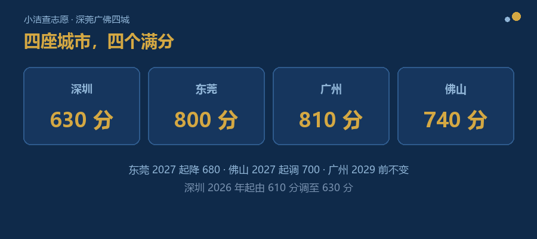
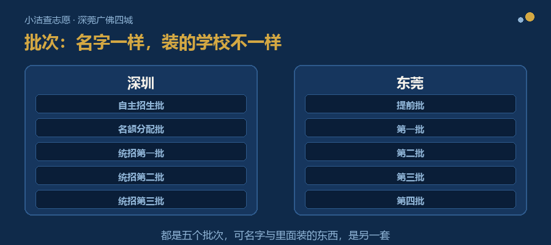
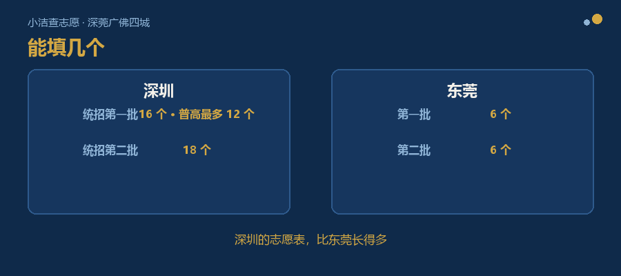

前几天，一位东莞的家长找到我。
她说，她在家长群里看到我们给深圳家长整理的那些东西——深圳的招生文件、历年录取标准，都已经理出来了。她问我：能不能也帮东莞的家长做一份？
问完，她又补了一句：
第二个问题，我得认真答：不一样。
而且不是“细节上有点差别”的那种不一样——是从第一件事开始，就不是同一套东西。
做这件事的第一步，是把官方文件一份一份下下来。深圳、东莞、广州、佛山，四座城市的招生文件、招生计划、历年录取标准，各归各的城市，各归各的年份。
收上来之后，我做的第一件事，是把每座城市的“中考总分”对齐。结果是：
| 城市 | 中考总分 |
|---|---|
| 深圳 | 630 分（2026 年起，从 610 分调到 630 分） |
| 东莞 | 800 分 |
| 广州 | 810 分 |
| 佛山 | 740 分 |

四城总分：深圳 630 / 东莞 800 / 广州 810 / 佛山 740
四座城市，四个满分。
这就意味着，“600 分”这三个字，在四座城市不是同一件事——在深圳，它是接近顶部的分数；到了东莞、广州，只是中等偏上。
更关键的是，其中三座还在动。
深圳刚改完，从 610 调到 630。东莞已经明确：2027 年起降到 680 分，计分科目从 10 门减到 8 门，生物、地理不再计入录取总分。佛山也明确，2027 年起调整为 700 分。
只有广州说得很清楚：到 2029 年前，保持 810 分不变。
还有一件更麻烦的：往年的录取线，不能直接拿来比。
深圳从 610 改到 630，录进去的每一所学校，分数线也跟着换了尺度。同样是 550 分，在 610 那一套里和 630 那一套里，不是同一个位置——得换算过，才能放在一起看。
家长自己查，栽的常常也是这儿：看到“这所学校去年 550 分”，就拿来对今年的分数。
在深圳，录取按五个批次走：
东莞也是五个批次，但名字和里面装的东西，是另一套：

深圳五批 vs 东莞五批：名称与内容对照
东莞的“第一批”里，装的是公办普高、民办普高、中本贯通班、综合高中普高班。深圳的“统招第一批”里，装的是普高。
两座城市都有“第一批”这三个字，可它不是同一批学校。
再翻佛山，会看到更细的一层：佛山的批次下面还分“层次”——光一个提前批，就排了六个层次。
广州又是另一种分法：四个批次的招生学校，其中第二批次，是按初中学校来排列的。
比批次叫什么名字更要紧的，是志愿本身怎么填。
先看能填几个。
| 城市与批次 | 可填志愿数 |
|---|---|
| 深圳 · 统招第一批 | 16 个（普通高中最多 12 个） |
| 东莞 · 第一批 | 6 个 |
| 深圳 · 第二批 | 18 个 |
| 东莞 · 第二批 | 6 个 |
深圳的志愿表，比东莞长得多。

志愿表对比：深圳长表 vs 东莞短表
再说怎么录。
深圳是平行志愿：系统按总分从高到低，一个一个考生处理；轮到谁，就按他自己排的志愿顺序往下看，够哪个录哪个。志愿之间不分差——最想去的放第一个，就对了。
东莞不是这样。东莞的大部分学校也按平行志愿来，但一批重点高中例外：
报第二志愿，录取分数线要比第一志愿高 5 分；报第三志愿，要高 10 分；而且这些学校只录到第三志愿——第四志愿及以后，直接不看了。
同样一个孩子、同样一个分数，在深圳，志愿顺序是“喜好顺序”；在东莞，志愿顺序还带着“分数代价”。
两张志愿表放在一起，是完全不同的两张表。
每年找我们咨询的家长，深圳最多。所以第一座，从深圳开始。
深圳之后，第二座是东莞。
东莞给我的第一个提醒，就是上面那个总分：它 2027 年要从 800 分降到 680 分，计分科目从 10 门减到 8 门。
这两件事叠在一起，意味着什么？
意味着东莞 2026 年的录取分数线，到 2027 年，不能直接拿来对照。
不是“大概往上浮一点”的问题——总分换了，算分的科目也换了。去年那条线，明年就是拿另一把尺子量出来的数。
深圳那边是往上加，好歹算得出来。东莞这个算不出来——一年的线归一年，分开标。
深圳、东莞的资料已经重新梳理完毕，广州还在做。佛山的材料也拿到了，排在后面。
这些资料理完，下一步要做出一样东西。它叫 HSEE择校助手。
名字是我们自己起的，费了不少劲。难的不是想不出好名字——“中考”“升学”“志愿”这几个字，一个都用不上。有的是政府部门在用，有的早被人注册了。能叫的划掉一批又一批，最后用了个缩写：HSEE——High School Enrollment Exam（中考）的缩写。
起这个名字，跟你们填志愿其实是一回事——好名字早被别人占了，剩下来的又差点意思，来回算几遍，最后还是回到规则允许的那几个里挑。
如果你所在的城市还没排到，不用急：我会一座一座写过来。
这件事的工作量，确实不小。四个城市，四套文件，每个城市还要一年一年往回核。
好在这些年一直在做这件事——资料是现成的，方法也已经跑熟。所以路子是清楚的，剩下的就是一步一步走。
等四座城市都齐了，我想先请一批家长进来试用，看哪里还不顺手。
下一篇，我想讲讲：为什么网上那些分数线，不能直接拿来用。